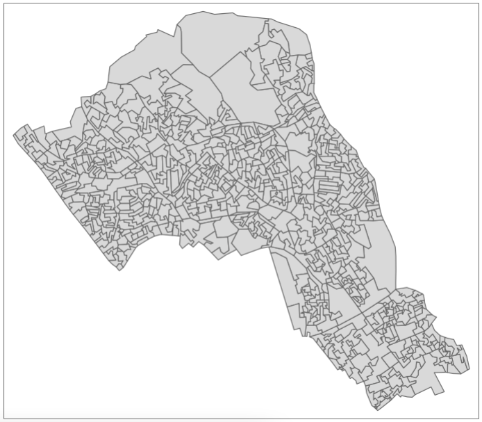
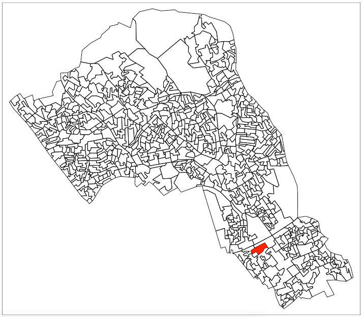
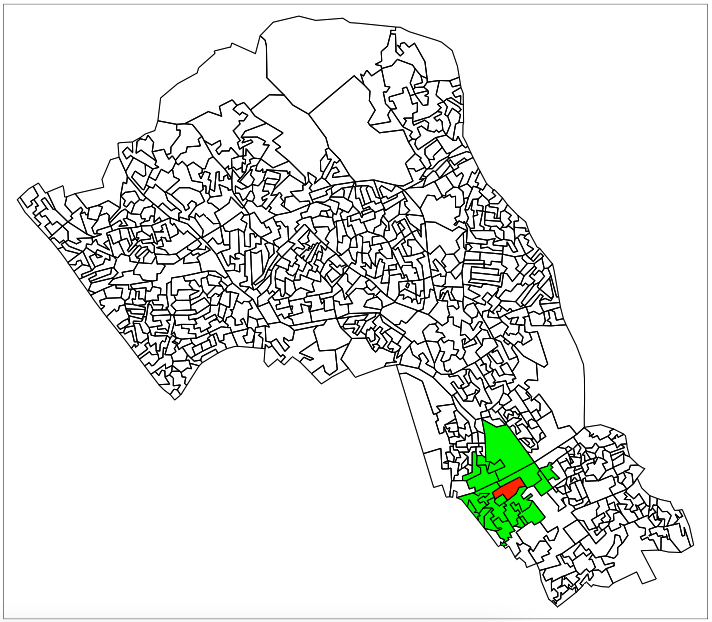
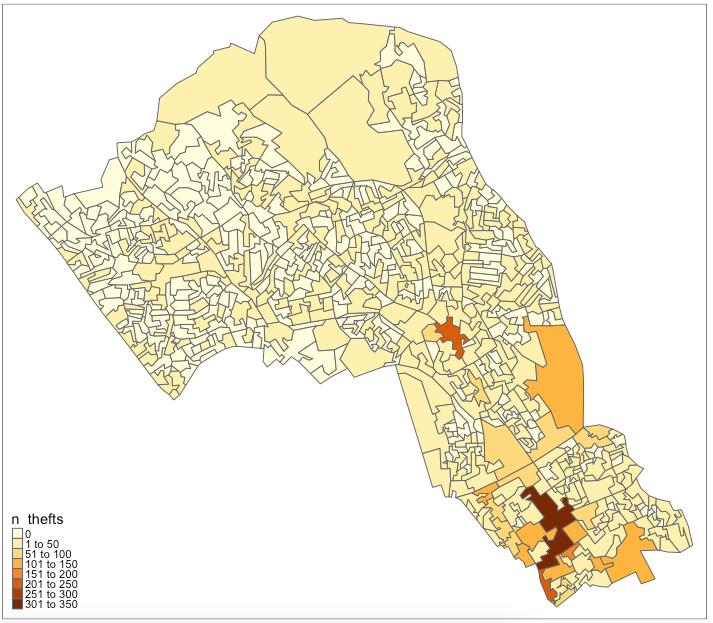
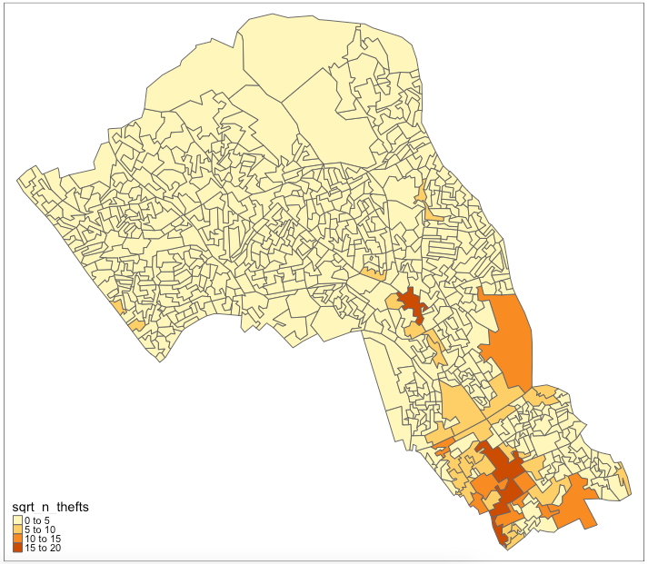
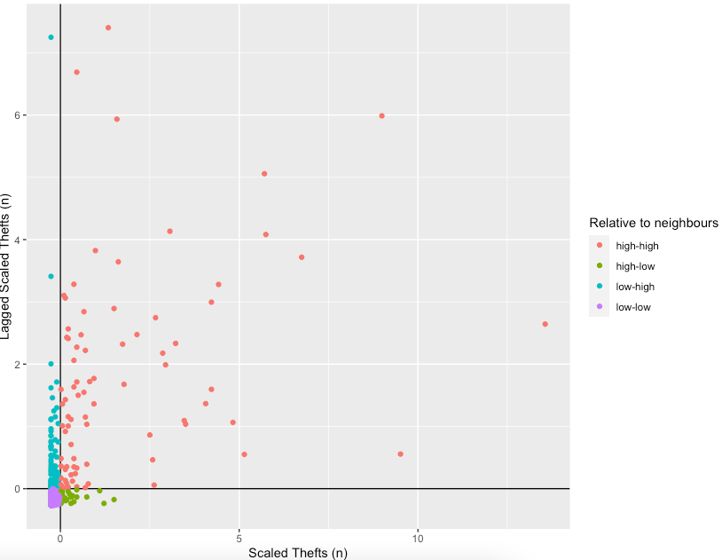
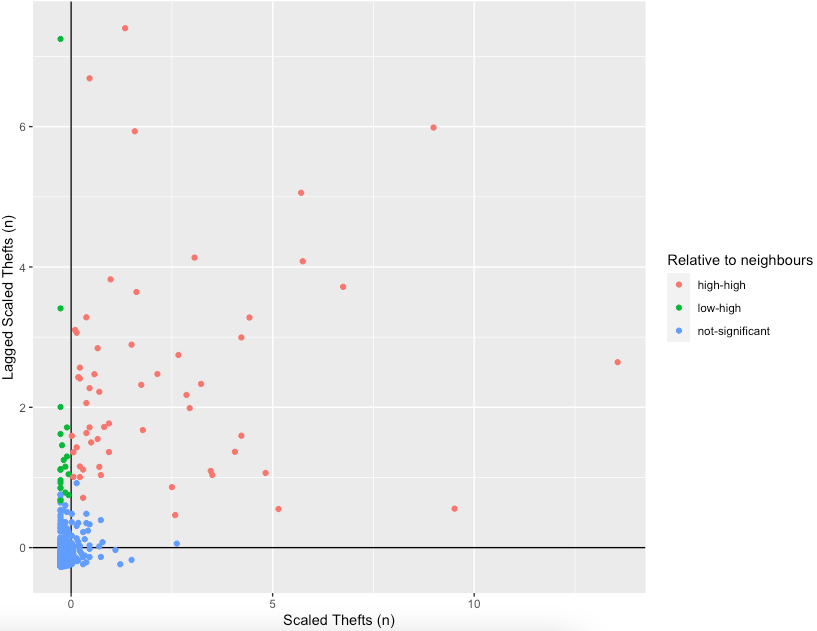
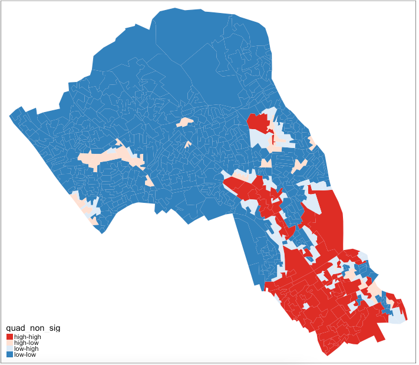
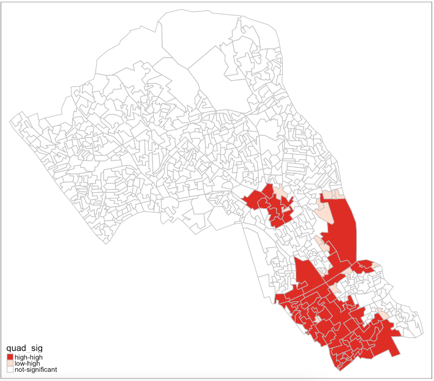

4 Spatial autocorrelation and dependence
4.1 Introduction
4.1.2 Computer practical video (Length: 02:00:01)
This week, we focus on the first of two key properties of spatial data: spatial dependence. Spatial dependence is the idea that the observed value of a variable in one location is often dependent (to some degree) on the observed value of the same value in a nearby location. For spatial analysis, this dependence can be assessed and measured statistically by considering the level of spatial autocorrelation between values of a specific variable, observed in either different locations or between pairs of variables observed at the same location. Spatial autocorrelation occurs when these values are not independent of one another and instead cluster together across geographic space.
A critical first step of spatial autocorrelation is to define the criteria under which a spatial unit (e.g. an areal or point unit) can be understood as a “neighbour” to another unit. As highlighted in previous weeks, spatial properties can often take on several meanings, and as a result, have an impact on the validity and accuracy of spatial analysis. This multiplicity also can be applied to the concept of spatial neighbours which can be defined through adjacency, contiguity or distance-based measures. As the specification of these criteria can impact the results, the definition followed therefore need to be grounded in particular theory that aims to represent the process and variable investigated.
4.1.3 Learning outcomes
Understanding the notion that spatial dependence refers to the degree of spatial autocorrelation between independently measured values observed in geographical space. We will learn how to estimate global measures of spatial autocorrelation (e.g., Moran’s I) to provide a singular measure of spatial dependence. We will learn how Local indicators of spatial association (LISA) to perform a similar function but yield multiple location-specific measures of spatial dependence.
4.1.4 Getting started
To enable the efficient, repeatable and reproducible functionality of our work, we will use R-Studio’s ability to create and host code as a script. Before we do anything therefore, we will need to create a new R script: File > New File > R Script. Remember, you can save your script with the quick save shortcuts (e.g. cmd + s (mac) / ctrl + s (windows)).
4.1.5 Datasets & setting up the work directory
Before you begin, if you have not done so already, please make sure to download all data by clicking here. Create a sub folder called “Week 3” within your “GEOG0114” folder stored in the desktop of your personal computer. Make sure to extract all data from the downloaded zip folder and store it into “Week 3” folder. Use your newly open R script and set the work directory to Week 3’s folder.
For Windows, the code for setting the work directory will be:
For MAC, the code for setting the work directory will be:
4.1.6 Loading and installing packages
We will need to load the following packages from previous practicals:
sf: Simple Featurestmap: Thematic Mappingtidyverse: Contains a collection of packages to support efficient data managing
The above packages sf, tmap and tidyverse should have been installed previously in the last session. Therefore, we do not have to install them again, we only need to activate them using the library() function. There will be some new packages we need to install:
nngeo: Thenngeopackage includes functions for spatial join of layers based on k-nearest neighbor relation between featuresspdep: Provides access to a collection of functions to create spatial weights matrix objects from polygon contiguities, and testing spatial dependencesp: Provides access to a collection of functions for handling different classes and methods for spatial datadata.table: Gives us access to function that deals with faster aggregation of large data frames etc.,
# install the packages using the install.package()
install.packages("nngeo")
install.packages("spdep")
install.packages("sp")
install.packages("data.table")
# Load the packages with library()
library("tidyverse")
library("sf")
library("tmap")
library("nngeo")
library("spdep")
library("sp")
library("data.table")4.2 Case study
This week looks at spatial dependence and autocorrelation in detail, focusing on the different methods of assessment. As part of this, we look at the multiple methods to defining spatial neighbours and their suitability of use across different spatial phenomena – and how this approach is used to generate spatial weights for use within these spatial autocorrelation methods as well as their potential to generate spatially-explicit variables.
We put these learnings into practice through an analysis of spatial dependence of areal crime data, experimenting with the deployment of different neighbours and the impact of their analyses. For this practical we will look at the distribution of thefts from persons in the borough of Camden.
4.2.1 Neighbours
If we want to come up with quantifiable descriptions of variables and how they vary over space, then we need to find ways of quantifying the distance from point to point. When you attach values to the polygons of wards in London, and visualise them, different patterns appear, and the different shapes and sizes of the polygons effect what these patterns look like. There can appear to be clusters, or the distribution can be random. If you want to explain and discuss variables, the underlying causes, and the possible solutions to issues, it becomes useful to quantify how clustered, or at the opposite end, how random these distributions are. This issue is known as spatial autocorrelation.
In raster data, variables are measured at regular spatial intervals (or interpolated to be represented as such). Each measurement is regularly spaced from its neighbours, like the pixels on the screen you are reading this from. With vector data, the distance of measurement to measurement, and the size and shape of the “pixel” of measurement becomes part of the captured information. Whilst this can allow for more nuanced representations of spatial phenomena, it also means that the quantity and type of distance between measurements needs to be acknowledged.
If you want to calculate the relative spatial relation of distributions, knowledge of what counts as a “neighbour” becomes useful. Neighbours can be neighbours due to euclidean distance (distance in space), or they can be due to shared relationships, like a shared boundary, or they can simply be the nearest neighbour, if there aren’t many other vectors around. Depending on the variable you are measuring the appropriateness of neighbourhood calculation techniques can change.
4.2.1.1 Loading our data sets
Now we have the data in the correct folders, we can load and plot the shape data.
# load Camden boundaries
camden_oas <- st_read('OAs_camden_2011.shp', crs=27700)
# inspect
tm_shape(camden_oas) +
tm_polygons()
You can see how one of these output areas could have many more neighbours than others, they vary a great deal in size and shape. The dimensions of these objects change over space, as a result the measurements within them must change too.
Output areas are designed to convey and contain census information, so they are created in a way that maintains a similar number of residents in each one. The more sparsely populated an OA the larger it is. Output Areas are designed to cover the entirety of the land of England and Wales so they stretch over places where there are no people. In the north of Camden the largest Ouput Areas span over Hampstead Heath, a large park.
Let’s explore how to find different kinds of neighbours using the example of one ‘randomly’ selected output area (E00004174) that happens to contain the UCL main campus.
# highlight E00004174
tm_shape(camden_oas) +
tm_borders(col='black') +
tm_shape(camden_oas[camden_oas$OA11CD=='E00004174',]) +
tm_fill(col='red')
4.2.1.2 Euclidean neighbours
The first way we are going to call something a neighbour is by using Euclidean distance. As our OA shapefile is projected in BNG (British National Grid), the coordinates are planar, going up 1 is the same distance as going sideways 1. Even better the coordinates are in metric measurements so it’s easy to make up heuristic distances.
Let’s call every output area with a centroid 500m or less away from the centroid of our chosen OA a neighbour:
- we select only the the centroid of our chosen output area and all other areas (with
st_centroid()) - we set the maximum number of neighbours we want to find to “50” (with parameter
k) - we set the maximum distance of calling an OA centroid a neigbour to “500” (with parameter
maxdist) - we return a sparse matrix that tells us whether each OA is a neighbour or not (with parameter
sparse)
# assign our chosen OA to a variable
chosen_oa <- 'E00004174'
# identify neighbours
chosen_oa_neighbours <- st_nn(st_geometry(st_centroid(camden_oas[camden_oas$OA11CD==chosen_oa,])),
st_geometry(st_centroid(camden_oas)),
sparse = TRUE,
k = 50,
maxdist = 500)
# inspect
class(chosen_oa_neighbours)
# get the names (codes) of these neighbours
neighbour_names <- camden_oas[chosen_oa_neighbours[[1]],]
neighbour_names <- neighbour_names$OA11CD
# inspect
tm_shape(camden_oas) +
tm_borders() +
# highlight only the neighbours
tm_shape(camden_oas[camden_oas$OA11CD %in% neighbour_names,]) +
tm_fill(col = 'green') +
# highlight only the chosen OA
tm_shape(camden_oas[camden_oas$OA11CD==chosen_oa,]) +
tm_fill(col = 'red') +
tm_shape(camden_oas) +
# overlay the borders
tm_borders(col='black')
4.2.2 Theft in Camden
Now that we have found the different ways of finding neighbours we can consider how they relate to one another. There are two ways of looking at spatial autocorrelation:
- Global: This is a way of creating a metric of how regularly or irregularly clustered the variables are over the entire area studied.
- Local: This is the difference between an area and its neighbours. You would expect neighbours to be similar, but you can find exceptional places and results by seeing if places are quantifiably more like or dislike their neighbours than the average other place.
But before we start that let’s get into the data we are going to use! We’ll be using personal theft data from around Camden. Our neighbourhood analysis of spatial autocorrelation should allow us to quantify the pattern of distribution of reported theft from persons in Camden in 2019.
# load theft data
camden_theft <- read.csv('2019_camden_theft_from_person.csv')
# convert csv to sf object
camden_theft <- st_as_sf(camden_theft, coords = c('X','Y'), crs = 27700)
# inspect
tm_shape(camden_oas) +
tm_polygons() +
tm_shape(camden_theft) +
tm_dots()
This is point data, but we are interested in the polygons and how this data relates to the administrative boundaries it is within. Let’s count the number of thefts in each OA. This is a spatial operation that is often called “point in polygon”. As we are just counting the number of occurrences in each polygon it is quite easy. In the future you may often want to aggregate over points for an area, or in reverse assign values from the polygon to the points.
# thefts in Camden
camden_oas$n_thefts <- lengths(st_intersects(camden_oas, camden_theft))
# inspect
tm_shape(camden_oas) +
tm_fill(col='n_thefts') +
tm_borders(lty="solid")
You can see our map is skewed by central London, meaning that the results in central London (the south of Camden) are so much larger than those in the north that it makes it harder to see the smaller differences between other areas. We’ll take the square root of the number of thefts to remedy this.
# square root of thefts
camden_oas$sqrt_n_thefts <- sqrt(camden_oas$n_thefts)
# inspect
tm_shape(camden_oas) +
tm_fill(col='sqrt_n_thefts') +
tm_borders(lty="solid")
There: a slightly more nuanced picture
4.2.3 Global Moran’s I
With a Global Moran’s I we can test how “random” the spatial distribution of these values is. Global Moran’s I is a metric between -1 and 1. -1 is a completely even spatial distribution of values, 0 is a “random” distribution, and 1 is a “non-random” distribution of clearly defined clusters.
To calculate the Global Moran’s I you need an adjacency matrix that contains the information of whether or not an OA is next to another. For an even more nuanced view you can include distance, or a distance weighting in the matrix rather than just the TRUE or FALSE, to take into account the strength of the neighbourhoodness. Because of the way Moran’s I functions in R it is necessary to use the sp and spdep libraries (which we have loaded earlier). As you will see these methods and functions have quite esoteric and complicated syntax. Some of the operations they will do will be similar to the examples shown earlier, but the way they assign and store variables makes it much quicker to run complex spatial operations.
# convert to sp
camden_oas_sp <- as_Spatial(camden_oas, IDs=camden_oas$OA11CD)
# inspect
class(camden_oas_sp)Now we can make the esoteric and timesaving “nb” object in which we store for each OA which other OAs are considered to be neighbours.
# create an nb object
camden_oas_nb <- poly2nb(camden_oas_sp, row.names=camden_oas_sp$OA11CD)
# inspect
class(camden_oas_nb)## List of 749
## $ : int [1:7] 10 15 215 303 327 375 464
## $ : int [1:5] 19 72 309 365 430
## $ : int [1:3] 133 152 709
## $ : int [1:7] 78 131 152 286 314 582 651
## $ : int [1:5] 67 316 486 492 703
## $ : int [1:8] 7 68 317 487 556 612 625 638
## $ : int [1:3] 6 68 317
## $ : int [1:7] 57 58 164 358 429 605 684
## $ : int [1:5] 58 164 489 609 700
## $ : int [1:7] 1 215 245 311 327 366 644
## [list output truncated]
## - attr(*, "class")= chr "nb"
## - attr(*, "region.id")= chr [1:749] "E00004395" "E00004314" "E00004578" "E00004579" ...
## - attr(*, "call")= language poly2nb(pl = camden_oas_sp, row.names = camden_oas_sp$OA11CD)
## - attr(*, "type")= chr "queen"
## - attr(*, "sym")= logi TRUENext, we need to assign weights to each neighbouring polygon. In our case, each neighbouring polygon will be assigned equal weight with style='W'. After this, we can calculate a value for the Global Moran’s I.
# create the list weights object
nb_weights_list <- nb2listw(camden_oas_nb, style='W')
# inspect
class(nb_weights_list)# Moran's I
mi_value <- moran(camden_oas_sp$n_thefts,nb_weights_list,n=length(nb_weights_list$neighbours),S0=Szero(nb_weights_list))
# inspect
mi_valueThe Global Moran’s I seems to indicate that there is indeed some spatial autocorrelation in our data, however, this is just a quick way to check the score. To do so properly we need to compare our score a randomly distributed version of the variables. We can do this by using something called a Monte Carlo simulation.
# run a Monte Carlo simulation 599 times
mc_model <- moran.mc(camden_oas_sp$n_thefts, nb_weights_list, nsim=599)
# inspect
mc_model## Monte-Carlo simulation of Moran I
##
## data: camden_oas_sp$n_thefts
## weights: nb_weights_list
## number of simulations + 1: 600
##
## statistic = 0.47721, observed rank = 600, p-value = 0.001667
## alternative hypothesis: greaterThis model shows that our distribution of thefts differs significantly from a random distribution. As such, we can conclude that there is significant spatial autocorrelation in our theft data set.
4.2.4 Local Moran’s I (or LISA)
With a measurement of local spatial autocorrelation we could find hotspots of theft that are surrounded by areas of much lower theft. According to the previous global statistic these are not randomly distributed pockets but would be outliers against the general trend of clusteredness! These could be areas that contain very specific locations, where interventions could be made that drastically reduce the rate of crime rather than other areas where there is a high level of ambient crime.
# create an nb object
camden_oas_nb <- poly2nb(camden_oas_sp, row.names=camden_oas_sp$OA11CD)
# create the list weights object
nb_weights_list <- nb2listw(camden_oas_nb, style='W')
# Local Moran's I
local_moran_camden_oa_theft <- localmoran(camden_oas_sp$n_thefts, nb_weights_list)To properly utilise these local statistics and make an intuitively useful map, we need to combine them with our crime count variable. Because of the way the new variable will be calculated, we first need to rescale our variable so that the mean is 0.
To compare this rescaled value against its neighbours, we subsequently need to create a new column that carries information about the neighbours. This is called a spatial lag function. The “lag” just refers to the fact you are comparing one observation against another, this can also be used between timed observations. In this case, the “lag” we are looking at is between neighbours.
# create a spatial lag variable
camden_oas_sp$lag_scale_n_thefts <- lag.listw(nb_weights_list, camden_oas_sp$scale_n_thefts)Now we have used sp for all it is worth it’s time to head back to the safety of sf() before exploring any forms of more localised patterns.
To make a human readable version of the map we will generate some labels for our findings from the Local Moran’s I stats. This process calculates what the value of each polygon is compared to its neighbours and works out if they are similar or dissimilar and in which way, then gives them a text label to describe the relationship.
# set a significance value
sig_level <- 0.1
# classification with significance value
camden_oas_moran_stats$quad_sig <- ifelse(camden_oas_moran_stats$scale_n_thefts > 0 &
camden_oas_moran_stats$lag_scale_n_thefts > 0 &
local_moran_camden_oa_theft[,5] <= sig_level,
'high-high',
ifelse(camden_oas_moran_stats$scale_n_thefts <= 0 &
camden_oas_moran_stats$lag_scale_n_thefts <= 0 &
local_moran_camden_oa_theft[,5] <= sig_level,
'low-low',
ifelse(camden_oas_moran_stats$scale_n_thefts > 0 &
camden_oas_moran_stats$lag_scale_n_thefts <= 0 &
local_moran_camden_oa_theft[,5] <= sig_level,
'high-low',
ifelse(camden_oas_moran_stats$scale_n_thefts <= 0 &
camden_oas_moran_stats$lag_scale_n_thefts > 0 &
local_moran_camden_oa_theft[,5] <= sig_level,
'low-high',
ifelse(local_moran_camden_oa_theft[,5] > sig_level,
'not-significant',
'not-significant')))))
# classification without significance value
camden_oas_moran_stats$quad_non_sig <- ifelse(camden_oas_moran_stats$scale_n_thefts > 0 &
camden_oas_moran_stats$lag_scale_n_thefts > 0,
'high-high',
ifelse(camden_oas_moran_stats$scale_n_thefts <= 0 &
camden_oas_moran_stats$lag_scale_n_thefts <= 0,
'low-low',
ifelse(camden_oas_moran_stats$scale_n_thefts > 0 &
camden_oas_moran_stats$lag_scale_n_thefts <= 0,
'high-low',
ifelse(camden_oas_moran_stats$scale_n_thefts <= 0 &
camden_oas_moran_stats$lag_scale_n_thefts > 0,
'low-high',NA))))To understand how this is working we can look at the data non-spatially. As we rescaled the data, our axes should split the data neatly into their different area vs spatial lag relationship categories. Let’s make the scatterplot using the scaled number of thefts for the areas in the x axis and their spatially lagged results in the y axis.
# plot 1
# plot the results without the statistical significance
ggplot(camden_oas_moran_stats, aes(x = scale_n_thefts,
y = lag_scale_n_thefts,
color = quad_non_sig)) +
geom_vline(xintercept = 0) + # plot vertical line
geom_hline(yintercept = 0) + # plot horizontal line
xlab('Scaled Thefts (n)') +
ylab('Lagged Scaled Thefts (n)') +
labs(colour='Relative to neighbours') +
geom_point()
# plot 2
# plot the results with the statistical significance
ggplot(camden_oas_moran_stats, aes(x = scale_n_thefts,
y = lag_scale_n_thefts,
color = quad_sig)) +
geom_vline(xintercept = 0) + # plot vertical line
geom_hline(yintercept = 0) + # plot horizontal line
xlab('Scaled Thefts (n)') +
ylab('Lagged Scaled Thefts (n)') +
labs(colour='Relative to neighbours') +
geom_point()
Now let’s see how they are arranged spatially.
# map all of the results here
tm_shape(camden_oas_moran_stats) +
tm_fill(col = 'quad_non_sig', palette = c("#de2d26", "#fee0d2", "#deebf7", "#3182bd"))
# map only the statistically significant results here
# map only the statistically significant results here
tm_shape(camden_oas_moran_stats) +
tm_fill(col = 'quad_sig', palette = c("#de2d26", "#fee0d2", "white")) +
tm_borders(col = "grey")
As our data are so spatially clustered we can’t see any outlier places (once we have ignored the non-significant results). This suggests that the pattern of theft from persons is not highly concentrated in very small areas or particular Output Areas, and instead is spread on a larger scale than we have used here. To go further than we have today it would be possible to run the exact same code but using a larger scale, perhaps LSOA, or Ward, and compare how this changes the Moran’s I statistics globally and locally. Or, to gain statistical significance in looking at the difference between areas getting more data perhaps over a longer timescale, where there are less areas with 0 thefts.
4.4 References (see reading list)
- Gitbook: [R Programming] Gimond, M. (2021) Intro to GIS and spatial analysis. Chapter 13: Spatial autocorrelation Click link
- Book: [Theory] Longley, P. et al (2015) Geographic Information Science & systems (4th Edition); Chapter 2: The Nature of Geographic Data Click link
- Book: [Theory] Longley, P. _*et al_ (2015) Geographic Information Science & systems (4th Edition); Chapter 13: Spatial Analysis Click link
- Paper: [Research] Radil, S. 2016. Spatial analysis of crime. In: Huebner, B. and Bynum, T. The Handbook of Measurement Issues in Criminology and Criminal Justice, Chapter 24, pp.536-554. Click link (Note: use of your UCL login via institutional organisation (UK Federation) is required to access the digital paper)